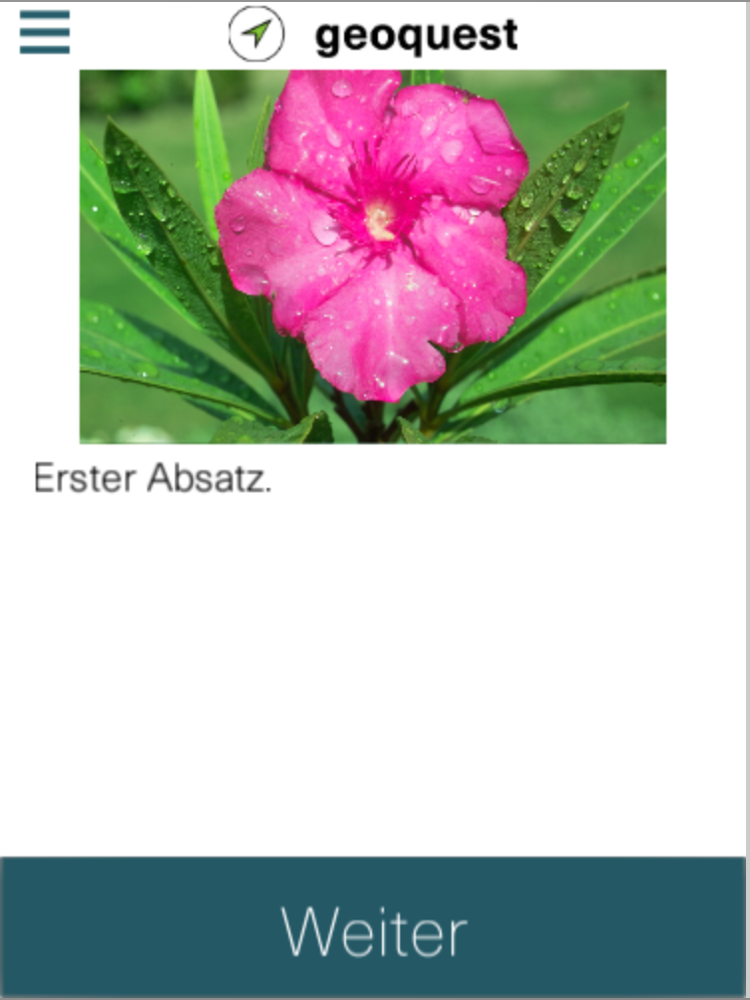
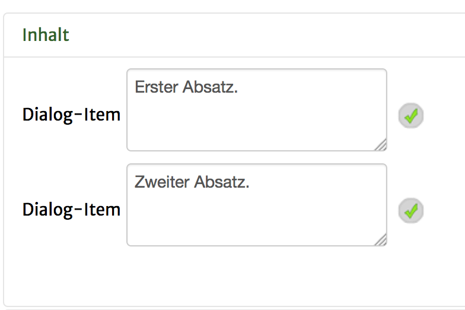
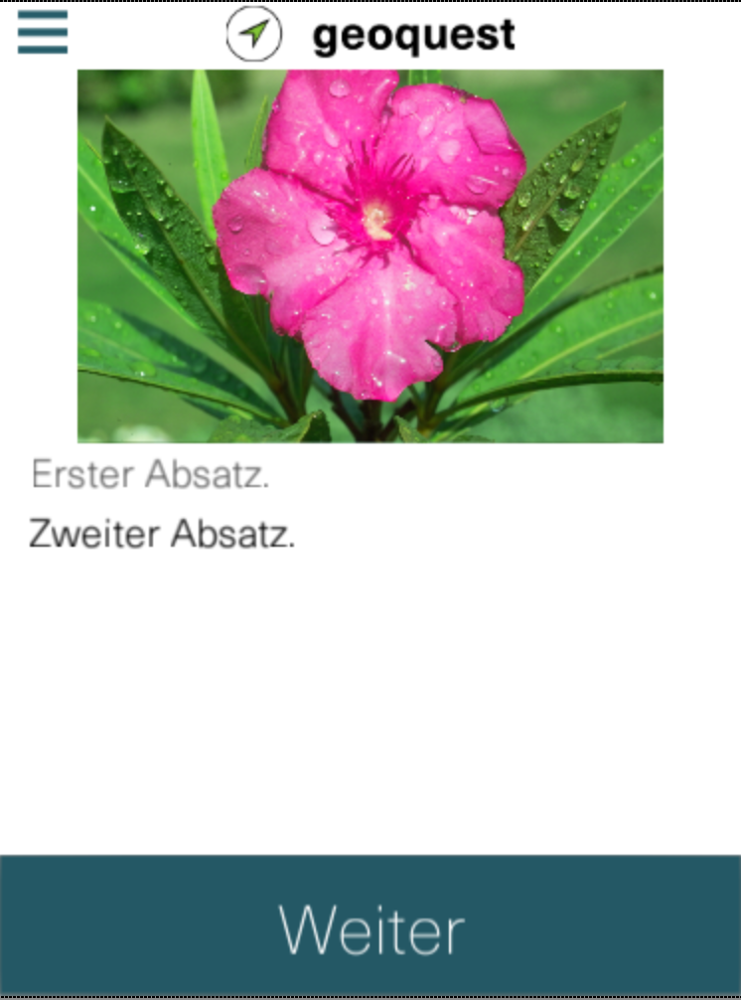
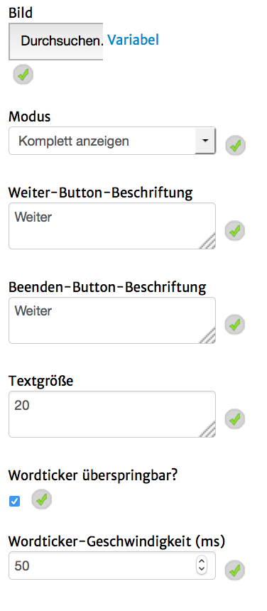
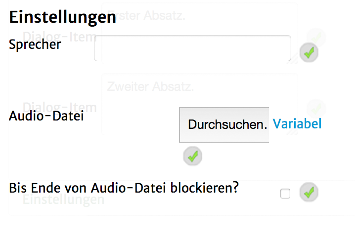

Mit diesem Seitentyp ist es möglich den Spieler an einem Gespräch mit einem oder mehreren "Non-Player-Characters" , also virtuellen Personen teilhaben zu lassen.
Im Grunde handelt es sich dabei um eine Kombination aus Bild und Text-Absätzen, wobei letzere einer nach dem Anderen nach einem Klick auf einen Button aufgerufen werden.
In Kombination mit den Fragen-Seitentypen lassen sich auch komplexe Dialogsysteme aufbauen.
Auf Adnroid sieht dieser Seitentyp ungefähr so aus:

Um Absätze zu definieren, lege unter dem Reiter "Inhalt" Objekte vom Typ "Dialog-Item" an. Ein Dialog-Item steht jeweils für einen Absatz und der Inhalt des Textfeldes ist der angezeigte Text. Durch einen Klick auf den Text "Dialog-Item" vor einem jeweiligen Textfeld, erhälst du ein Fenster mit weiteren Einstellungen zu diesem Dialog-Item, welche weiter unten genauer definiert sind.

Bei der Benutzung von mehreren Dialog-Iems sieht die Seite dann so aus:

Folgende Einstellungsmöglichkeiten gibt es für diesen Seitentyp:
|  | Bild: Die Bilddatei, die im oberen Teil der Seite angezeigt wird. Diese Datei kannst du auch direkt von einer Webseite per URL verknüpfen oder eine Variable von einem bereits aufgenommenen Foto benutzen. Klicke dazu auf "Variabel" neben dem Dateifeld und gib die URL (mit "https://" vorne) oder die Variable (mit "@_" vorne) in das nun sichtbare Textfeld ein. Mit einem Klick auf "Datei" gelangst du zurück zu der Möglichkeit eine Bilddatei hochzuladen. Modus: Die Art und Weise, wie die einzelnen Absätze eingeblendet werden. Weiter-Button-Beschriftung: Die Beschriftung des Buttons, falls der gerade aktuelle Absatz nicht der Letzte ist. Beenden-Button-Beschriftung: Die Beschriftung des Buttons, falls der gerade aktuelle Absatz der Letzte ist. Textgröße: Die Größe des Textes der Absätze. Wordticker überspringbar?: Wenn dies gesetzt ist, lässt sich der Wordticker mit einem Tippen auf den Button sofort überspringen, sodass der gesamte Absatz sofort sichtbar ist. Wordticker-Geschwindigkeit: Die Geschwindigkeit in Millisekunden in der der Wordticker einen neuen Buchstaben anzeigt. Eine kleinere Zahl führt zu einem schnelleren Aufdecken des Absatzes, eine größere Zahl zu einem langsameren Aufdecken. |
Zusätzlich gibt es noch Einstellungsmöglichkeiten für jeden Absatz. So kann jeder Absatz einen Sprecher und eine dazugehörige Audio-Datei erhalten, die abgespielt wird, sobald dieser Absatz angezeigt wird. So kann zum Beispiel eine Audio-Tour zum Mitlesen erstellt werden.
|  | Sprecher: Der Text, der in dicker Schrift vor dem jeweiligen Absatz steht. Dies ist als Anzeige des Namen der Person gedacht, kann aber auch anderweitig benutzt werden. Audio-Datei: Die Datei, welche abgespielt wird, sobald der Absatz angezeigt wird (oder der Wordticker für diesen Abstaz startet). Bis Ende von Audio-Datei blockieren?: Wenn dieses Häkchen gesetzt ist, lässt sich der Button unten auf der Seite erst betätigen, wenn die Audio-Datei fertig abgespielt ist. Dies empfiehlt sich zum Beispiel bei Audio-Touren. |